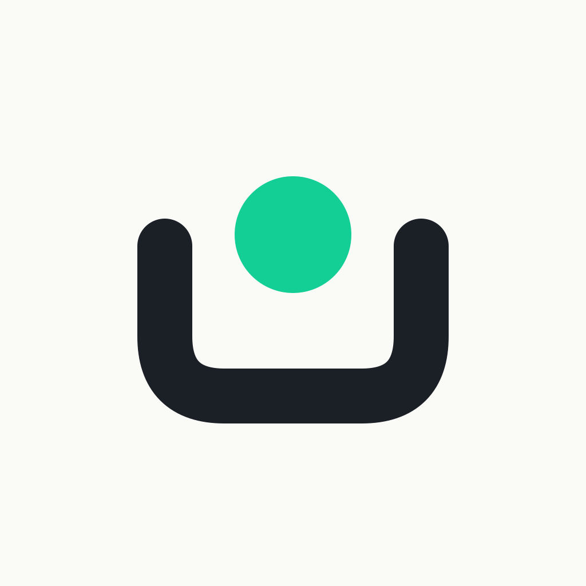
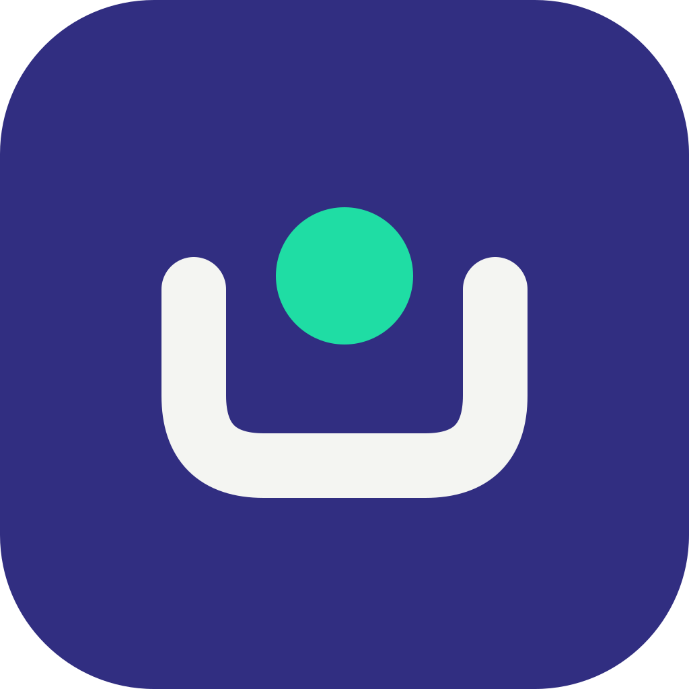

256Source for lingxia icon appicon-1024.png on iOS, Android, and
HarmonyOS. The OS applies the corner mask — artwork stays full-bleed.

256The dev Runner's identity icon — a terminal prompt paired diagonally with the LingXia vessel, kept distinct from user app icons in the taskbar / Dock.

runner 128macOS does not mask icons — the artwork carries its own rounded plate
(824/1024 grid, 22.37% radius) and transparent margin.
Source for lingxia icon appicon-macos-1024.png -p macos.

256The CLI builds the adaptive foreground (icon scaled to the 66/108 safe zone) over
the #FAFAF7 background color. Most launchers mask to a circle.